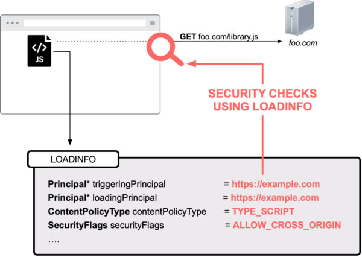

This blog post has first appeared on the Mozilla Attack & Defense blog and was co-authored with Christoph Kerschbaumer
This is the first part of a blog post series that will allow you to understand how Firefox implements Web Security fundamentals, like the Same-Origin Policy. This first post of the series covers the architectural design, terminology, and introduces core interfaces that our implementation of the Same-Origin Policy relies on: nsIPrincipal and nsILoadinfo.
Background on Web Security Checks
Whenever Firefox on Desktop or Android fetches a resource from the web, Firefox performs a variety of web security checks to ensure web pages can not harm end users by performing malicious actions. For example, when loading a sub-resource from a web page, Firefox ensures that its URL is not targeting the local file system with a file:// scheme. Before diving deeper into Firefox Security internals we have to introduce the term Security Principal* , which is key for understanding how Firefox enforces web security checks.
The Security Contexts in Firefox
All web related security checks within Firefox are evaluated based on the security concept of a Principal. Briefly, a Principal reflects a security context. E.g., when visiting https://example.com a * Content-Principal* of https://example.com reflects the security context of that page. More precisely, Firefox captures the security context using one of the following four types of Principals:
-
Content-Principal
The HTML specification associates an origin with a Document or a Worker. That origin information is encapsulated within a Content-Principal and reflects the security context for all web-hosted resources. E.g. when loading the web page https://example.com, then Firefox creates a Content-Principal encapsulating origin information of https://example.com which then reflects the security context of that web page.
-
Null-Principal
In special cases, websites are never same-origin with anything else. Two such cases are iframes with a sandbox attribute and documents loaded with a data: URI. The HTML specification calls the origin of those pages an opaque origin. Our implementation uses a * Null-Principal* for reflecting the security context of an opaque origin. In contrast to a Content-Principal which internally maps to the origin of the resource, a Null-Principal uses a custom scheme and host, e.g. moz-nullprincipal:{0bceda9f-…}, where the host is represented as a UUID. So, when loading an iframe with a sandbox attribute Firefox internally generates a Null-Principal to reflect that security context. Please note that a Null-Principal is not equal to any other Principal and also not equal to any other Null-Principal. E.g., a data: URI iframe is not same-origin with another data: URI iframe because both security contexts are mapped through different Null-Principals. -
System-Principal
The * System-Principal* is used for the browser’s user interface, commonly referred to as “browser chrome”. An example of a page with these extra privileges is “about:support”. The System-Principal is shared across all privileged resources, and implemented as a Singleton. Since browser chrome code does not rely on a URI, the System-Principal internally also does not map to an origin. The System-Principal passes all security checks.
-
Expanded-Principal
A browser extension is more privileged than normal web pages, but must also be able to assume the security context of a website. Hence, an * Expanded-Principal is best understood as a * list of principals to match the security needs for Content Scripts in Firefox Extensions. When creating an Expanded-Principal Firefox takes multiple existing Principals, storing them in an allowlist. The security checks on the Expanded-Principal are then implemented as a loop through this allowlist of principals.
The Loading Life-Cycle in Firefox
Whenever a page performs a request, Firefox internally creates an nsIChannel object (which acts as the transport algorithm, such as HTTP(S), WebSocket etc.). Amongst other things an nsIChannel consists of an nsIURI, which is the URI to be loaded, and an nsILoadInfo object. The latter holds all security relevant attributes including security flags indicating what security checks need to be performed and the aforementioned Principal. It is worth emphasizing that the loadinfo – including the Principal – gets frozen at creation time and remains attached to the nsIChannel instance even if the load encounters any kind of redirect, e.g. a 302. The last step before Firefox starts loading bits over the network is performing all relevant security checks within the function asyncOpen() of any nsIChannel implementation.
Enforcing Web Security Checks in Firefox
Firefox enforces all web security checks by default by consulting a centralized ContentSecurityManager. As mentioned, every asyncOpen() implementation internally calls doContentSecurityCheck() which then performs all relevant web security checks e.g., Same-Origin Policy, Content Security Policy, Mixed Content Blocking.
To perform all relevant security checks Firefox has to take * multiple* principals into consideration, most notably the loadingPrincipal and the triggeringPrincipal. The loadingPrincipal is the principal of the document where the result of the load will be used. The triggeringPrincipal is the security context that actually triggered the URL to load. In most cases the loadingPrincipal and the triggeringPrincipal are identical. One example where loadingPrincipal and triggeringPrincipal differ is a cross-origin CSS file requesting an image. In that case the loadingPrincipal is a Content-Principal of the page where the image will be loaded into, and the triggeringPrincipal is a cross-origin Content-Principal of the CSS file.
Taking the loadingPrincipal and the triggeringPrincipal into account, Firefox performs security checks in an *asymmetric * fashion. More precisely, a Principal may have access to another Principal but not necessarily vice versa. This is also why security checks are not implemented as equality checks. Instead, Firefox relies on the concept of ‘subsumes’. In more detail, Firefox uses aPrincipal->Subsumes(aOtherPrincipal), to see if aPrincipal has access to aOtherPrincipal.
The aforementioned System-Principal subsumes all other principals, but a Null-Principal basically fails all security checks and is only same-origin with itself. A Content-Principal is same- origin to another Content-Principal if scheme, host and port are the same for both. If so, Firefox allows the load.
An illustrative example of a Web Security Check
Let’s assume you visit the web page https://example.com and that page then loads library.js from https://foo.com. For the JavaScript load to occur Firefox will internally create an nsIChannel with the URL of https://foo.com/library.js.

As illustrated, the loadinfo for that load would include the following information: A triggeringPrincipal of https://example.com, because the page https://example.com actually triggered the load to occur. The loadingPrincipal would also be set to https://example.com because the result of the JS load will be used in the security context of https://example.com. The ContentPolicy type will be set to TYPE_SCRIPT which e.g., allows mapping of content type to Content Security Policy directives (in this particular case to the script-src directive). Finally, the security flags would be set to ALLOW_CROSS_ORIGIN because JavaScript files are allowed to be loaded cross origin.
While in that particular case Firefox would allow the cross origin load, it would still ensure that the web page is not trying to access the local file system of the end user.
Going Forward
In this blog post, we explained how Firefox enforces Web Security checks, like the Same-Origin Policy. In the next post we’ll explain how to enable available logging mechanisms which allow for visual inspection of every web security check performed. We hope that this introduction will aid security research as well as bug bounty hunting and sparks your curiosity to go further, even contribute to Mozilla and the Open Web.